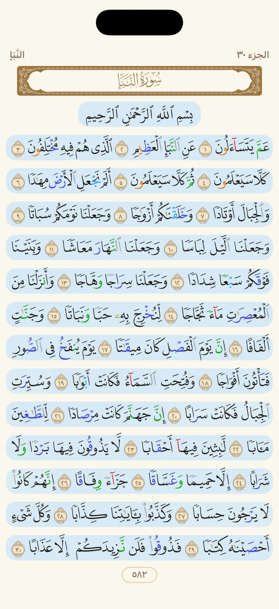
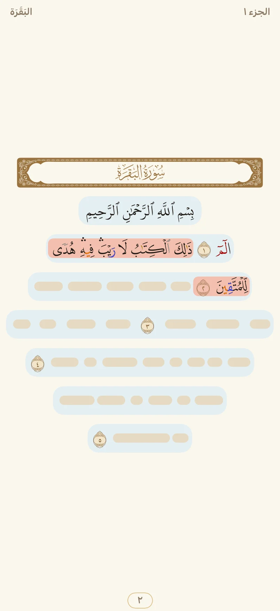
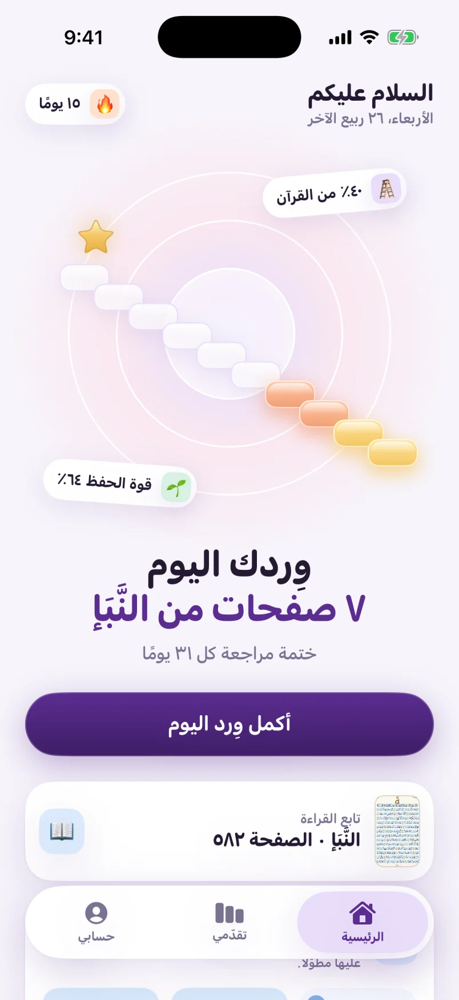
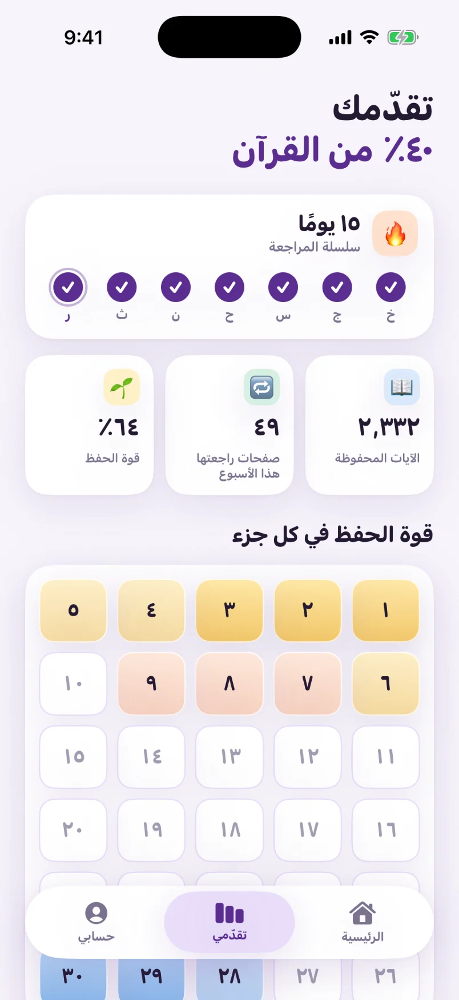

عن عبد الله بن عمرو رضي الله عنهما
قال رسول الله ﷺ:
يقالُ لصاحِبِ القرآنِ اقرَأ وارقَ ورتِّل كما كُنتَ ترتِّلُ في الدُّنيا فإنَّ منزلتَكَ عندَ آخرِ آيةٍ تقرؤُها
رواه أحمدReported by Ahmad
"It shall be said - meaning to the one who memorized the Qur'an - 'Recite, and rise up, recite (melodiously) as you would recite in the world. For indeed your rank shall be at the last Ayah you recited.'" Translation: Jami' at-Tirmidhi 2914, Darussalam
ثبِّت حفظك، وارتقِ آيةً بعد آية Strengthen your memorization, and rise, ayah by ayah.
اقرأ يرافق حافظ القرآن في مراجعته كل يوم: مصحف المدينة كما طُبع، ووِردٌ يوميّ يُقدَّر لك، ومنازل ترتقيها آيةً بعد آية. Aqra keeps the Quran memorizer company in daily revision: the Madinah Mushaf as printed, a daily wird measured for you, and stations you climb one ayah at a time.
مصحف المدينة، كما طُبع The Madinah Mushaf, as printed
صفحات المصحف الـ٦٠٤ بتخطيط طبعة ١٤٤١هـ من مجمع الملك فهد لطباعة المصحف الشريف، بألوان التجويد، فتبقى في عينك صورة الصفحة التي تحفظها. All 604 pages in the layout of the 1441H print by the King Fahd Glorious Quran Printing Complex, with tajweed colors, so the page you memorized stays in your mind's eye.
وما تحفظه يتلوّن في الصفحة بلون موضوعه، كما في المصحف الموضوعي الملوّن: خافتًا حين تحفظه، أشدّ كلما راجعته، باهتًا إن تأخّرت عنه. وما لم تحفظه يبقى ورقًا. What you've memorized takes the color of its topic on the page, like a thematic colored Mushaf: faint when new, fuller with every revision, fading when it's overdue. What you haven't memorized stays plain paper.

وِردٌ يوميّ يُقدَّر لك A daily wird, measured for you
تختار كم صفحة تراجع في اليوم، ويرتّب اقرأ وِردك: الصفحات التي تعثّرت فيها تعود أولًا، ثم دورةٌ على كل ما تحفظ بترتيب المصحف. والأيام التي تفوتك لا تتراكم عليك. You choose how many pages a day, and Aqra arranges the wird: pages you stumbled on come back first, then a rotation through everything you've memorized, in Mushaf order. Missed days don't pile up.
- تُحجب الآيات المحفوظةThe memorized ayat are veiledتبقى الصفحة أمامك، ومواضع الآيات ظاهرة.The page stays in front of you, with every ayah's place showing.
- تقرأ غيبًا وتكشفها آيةً آيةRecite from memory, revealing one ayah at a timeاضغط لتظهر الآية التالية وتتأكّد.Tap to reveal the next ayah and check yourself.
- تضغط على ما تعثّرت فيه، ثم «تم»Tap where you stumbled, then Doneتعود الصفحة بعد يوم، ثم ثلاثة، ثم سبعة، حتى تثبت.The page comes back after a day, then three, then seven, until it holds.
راجعت في الصلاة أو على صاحبك؟ علّم الصفحة من الوِرد، وتُحسب لك. Revised in prayer, or to a friend? Check the page off from the wird, and it counts.

ارتقِ منازلك آيةً بعد آية Climb your stations, ayah by ayah
كل آية تحفظها منزلةٌ ترتقيها، تذكيرًا بالحديث. على الرئيسية عشر درجات، كل درجة ثلاثة أجزاء، تُريك أين بلغت من القرآن، ومعها نسبة حفظك وقوّته وسلسلة مراجعتك. Every ayah you memorize is a station you rise to, in remembrance of the hadith. The home shows ten steps, three juz' each, with your share of the Quran, its strength, and your revision streak.
وفي «تقدّمي» ترى كل جزء على حدة: كم حفظت منه، وكم هو راسخ. And in Progress, every juz' at a glance: how much of it you've memorized, and how firmly.


سمِّع على شيخٍ مُجاز Recite to a qualified teacher
احجز مقعدًا في جلسة تسميع مع أيٍّ من الشيوخ المُجازين في اقرأ، حضوريًا أو عبر الفيديو. يعلّم الشيخ ما تعثّرت فيه على مصحفه، فتصبح آياتك «مُصدَّقة»، ويُحسب تسميعك عليه أثقل من مراجعتك وحدك. Book a seat in a tasmee' session with any of Aqra's vetted teachers, in person or by video. The teacher marks what you stumbled on, your ayat become verified, and a sheikh's tasmee' counts for more than revising alone.
وسمِّع لصديقك متى شئت: أرِه رمزك، فيعلّم تعثّراتك على جواله، ويُضاف تسميعه إلى مراجعتك. And recite to a friend whenever you like: show them your code, they mark your stumbles on their phone, and it's added to your revision.
الحجزBooking
اختر الشيخ والجلسة واحجز مقعدك. في كل جلسة مقاعد مجانية، الأسبق أولى، ومقاعد بالمزايدة تبدأ مجانية.Choose the teacher and the session, and book your seat. Every session keeps free seats, first come first served; some add seats by auction that start free.
حضوريًا أو عن بُعدIn person or by video
في الحلقة، أو بمكالمة فيديو تقرأ فيها ويصحّح الشيخ.In the circle, or on a video call where you recite and the teacher corrects.
علامة «مُصدَّق»The verified mark
ما سمّعته على شيخ يُعلَّم في مصحفك مصدَّقًا، وتسميعه يُثبّت حفظك أكثر.What you recite to a teacher is marked verified in your Mushaf, and counts for more in your memorization's strength.
من أول آية إلى الختم From the first ayah to the khatm
ضع خطتك: كم تحفظ كل يوم، وفي أي الأيام، ومن أين تبدأ. يقترح عليك اقرأ مقطع اليوم، ويُدخله محرّك المراجعة حين تحفظه، ويقدّر موعد ختمك من سيرك الفعلي. Set your plan: how much to memorize each day, on which days, and where to begin. Aqra proposes today's portion, hands it to the review engine once you've memorized it, and estimates when you'll complete the Quran from your actual pace.
خطة الحفظYour plan
من ربع وجه إلى وجه ونصف يوميًا، وموعد ختم يتجدّد مع سيرك.From a quarter page to a page and a half a day, with a completion date that follows your pace.
عشر مراحلTen stages
كل مرحلة ثلاثة أجزاء: حفظٌ وإتقانٌ واختبارٌ في التطبيق، واختبارٌ عند شيخ.Three juz' each: memorized, mastered, tested in the app, and tested by a teacher.
مع الآخرينTogether
تحدياتك مع نفسك، وسباقات مع أصدقائك، وختمة جماعية، ومسابقات شيخك تُحسب مما يسمعه منك.Challenges with yourself, races with friends, a khatmah together, and your teacher's competitions, scored from what they hear.
يعمل بلا حساب، ويحفظ تقدّمك متى شئت Works without an account, and backs up your progress when you choose
اقرأ يعمل على جهازك من أول يوم، دون إنترنت. وحين تشاء، سجّل الدخول بحساب Apple أو Google ليُحفَظ تقدّمك ويعود إليك على أي جهاز. نسختك الاحتياطية تُحفظ على خوادم في الدمام. Aqra works on your device from day one, offline. When you choose, sign in with Apple or Google so your progress is backed up and comes back to you on any device. Your backup is kept on servers in Dammam, Saudi Arabia.
نصّ القرآن أمانة The Quran's text is a trust
لا يُكتب نص القرآن في اقرأ بيد، ولا يُولَّد ولا يُعدَّل. يُعرض كما نُشر من مصادره، وتتحقّق الاختبارات من كل ملف ومن موضع كل آية في صفحتها قبل كل إصدار، ويراجع العرضَ حافظٌ قبل النشر. The Quran's text in Aqra is never typed, generated or edited. It's shown exactly as its sources published it, tests check every file and every ayah's place on its page before each release, and a hafiz reviews the rendering before publication.
يعرض اقرأ القرآن الكريم كما نُشر تمامًا، من هذه المصادر، مع الشكر والتقدير. Aqra shows the Quran exactly as published, from these sources, with thanks.
كل شيء جاهز، ابدأ رحلتك Everything is ready, begin your journey.
تقدّمك يُحفظ على جهازك، ويمكنك ربطه بحسابك متى شئت. Your progress is saved on your device, and you can link it to your account anytime.